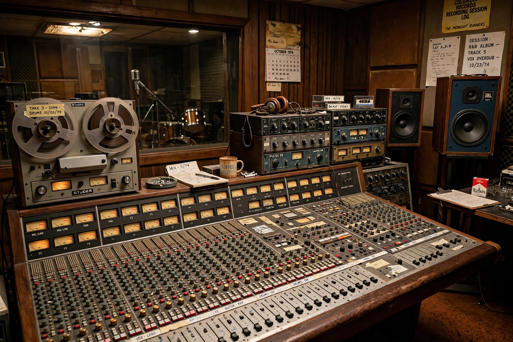

Polar Studios
Polar Studios was a recording studio in Stockholm, Sweden, founded in 1978 by Björn Ulvaeus, Benny Andersson, and Stig Anderson of Polar Music, principally as the home studio of ABBA. Housed in a former cinema, the Paladium, on Sankt Eriksgatan in the Kungsholmen district, it became one of Europe's most sought-after studios, hosting artists including Led Zeppelin, Genesis, the Rolling Stones, and Roxette. The studio closed on 1 May 2004.

| Polar Studios | |
|---|---|
| Location | Sankt Eriksgatan 58–60, Kungsholmen, Stockholm, Sweden |
| Founded | 1978 |
| Founders | Björn Ulvaeus, Benny Andersson, Stig Anderson |
| Closed | 1 May 2004 |
| Industry | Recording studio |
History
ABBA recorded most of their earlier work at Metronome and other Stockholm studios; by the late 1970s the group's success allowed them to build a facility to their own specification. Polar Studios opened in May 1978, equipped with a custom Harrison mixing console (later replaced by an SSL desk) and state-of-the-art acoustics by designer Jan Setterberg. ABBA recorded their albums Voulez-Vous (1979), Super Trouper (1980), and The Visitors (1981) there, along with their final sessions in 1982.
Notable recordings
The studio's most famous outside client was Led Zeppelin, who recorded In Through the Out Door (1979) at Polar. Genesis recorded parts of Duke and Abacab there; other users included the Rolling Stones, Eric Clapton, Ringo Starr, the Ramones, Backstreet Boys, Roxette, and Celine Dion. The building later housed rehearsal space, and the site is commemorated near the ABBA Museum on Djurgården, where the studio's original mixing desk is displayed.
Closure
Rising rents and the downturn in large-studio bookings led to Polar's closure in 2004; the premises were converted to other commercial uses. Despite its loss, Polar Studios remains emblematic of Sweden's outsized influence on global pop music production.